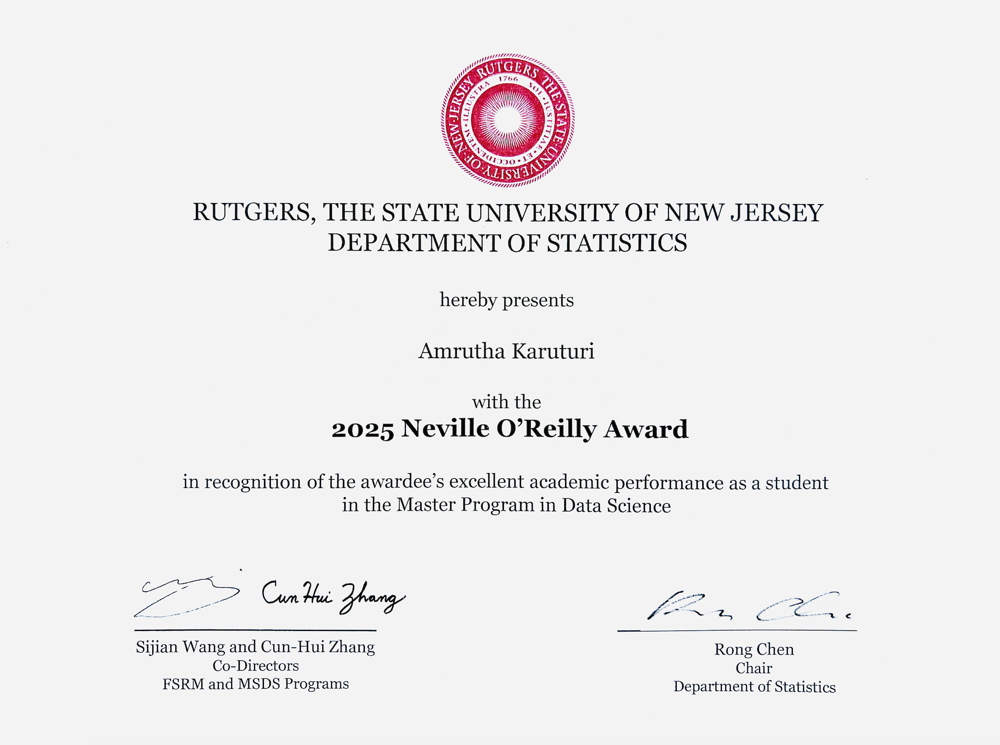

About me
Hello, I'm Amrutha Karuturi, an aspiring Data Scientist and Analyst, on a journey of innovation and exploration. Currently I'm looking for full time positions in Data Science, Data Analyst Machine Learning. . I completed my Master of Science degree in Data Science at Rutgers University - New Brunswick in May, 2025. I have a bachelors degree in Computer science from IIT Jodhpur, India. My academic journey revolved around advanced coursework, encompassing topics such as Statistical Modeling, Statistical Learning, Data Mining, Natural Language Processing, Data Wrangling and more.
Honors and Activities
Neville O'Reilly Award, Department of Statistics, Rutgers university
Winner of 2024 Bristol Myers Squibb Hackathon, Rutgers University
Finalist in RAISE-2025 Hackathon, Rutgers University
Ranked in Top 0.4% amongst 1.2 million in a nationwide engineering entrance examination - JEE Advanced.